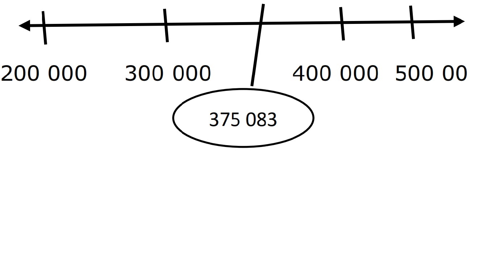

ENGAGE
The Philippines’ tourism industry showed an increasing growth in visitors arrivals from 2012 to 2016. Statistics shows the following increase:
| International Arrivals March 2012-2016 |
|
| 2016 | 510 270 |
| 2015 | 458 163 |
| 2014 | 425 858 |
| 2013 | 417 392 |
| 2012 | 375 083 |
About how many international arrivals were there last March 2012 and March 2016?
EXPLORE
Rounding numbers is helpful in estimating distances for travel. Time needed in doing tasks, and also in budgeting money.
A number line can help us visualize how estimation or rounding works. Its shows which number is closer or farther to a specific number,sometimes, three is no need to know the exact weight, height or number of things. When we know how to round numbers to the nearest place value, we can give an estimate of the numbers we need.
Study the line below
To which point is 375 083 closer: 300 000 or 400 000?
Evidently, 375 083 is closer to 400 000, so we round off 375 083 to 400 000. Let us apply this idea to the given problem.
About how many is the international arrival in march 2016? Is 510 270 closer to 400 000 or to 500 000 Clearly 510 270 is much closer. To 500 000 for this reason. The international arrivals is about 500 000.
How do we round?
We a number by identifying to which simpler number it is closest- either lesser or greater but not exact. Let us discuss how it is done.
ENGAGE
To round a number means to approximate a number to a particular place value. Numbers maybe rounded to the nearest tens, hundreds, thousands, millions, etc. The place value to which we round off a number is called the rounding place.
Study the table below.
| Rounding Place | Rounding Digit | Digit | Think | Rounded Number |
|---|---|---|---|---|
| Nearest million | 28 173 850 | 28 173 850 | 1<5 | 28 000 00 |
| Nearest hundred thousand | 28 173 850 | 28 173 850 | 7>5 | 28 200 000 |
| Nearest hundred | 28 173 850 | 28 173 850 | 5 =5 | 28 173 900 |
To round whole numbers, observe the digit to right of the rounding place. If the digit is greater than or equal to 5. Add 1 to the digit in the rounding place and replace all digits to its right with zeroes. If the digit is less than 5. Retain the digit in the rounding place and replace all digits to its right with zeroes.
Consider the number 5827
5827 rounded to the nearest tens is 5830.
5827 rounded to the nearest hundred is 5800.
5827 rounded to the nearest thousands is 6000.